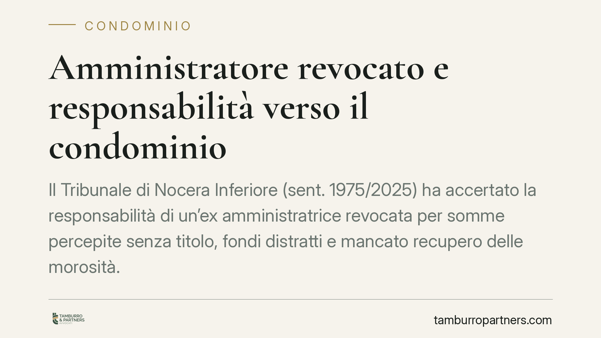

Amministratore revocato e responsabilità verso il condominio
Il Tribunale di Nocera Inferiore (sent. 1975/2025) ha accertato la responsabilità di un'ex amministratrice revocata per somme percepite senza titolo, fondi distratti e mancato recupero delle morosità. La pronuncia chiarisce che, trattandosi di responsabilità del mandatario, non serve il previo tentativo di mediazione. Vediamo perché questa decisione interessa ogni condominio e chi gestisce la contabilità comune.

Il caso
Un condominio ha agito contro la propria ex amministratrice, revocata dall'incarico, chiedendone la condanna al risarcimento. Tre le contestazioni: somme incassate senza alcun titolo giustificativo, fondi condominiali distratti dalla loro destinazione e omesso recupero delle quote dovute dai condomini morosi.
Il Tribunale di Nocera Inferiore, con sentenza n. 1975/2025, ha accertato la responsabilità dell'amministratrice, rinviando a una fase successiva la quantificazione esatta del danno. Una decisione che ribadisce un principio spesso sottovalutato: chi gestisce il condominio risponde personalmente degli errori e delle omissioni commessi nell'esercizio del mandato.
Inquadramento normativo
Il rapporto tra condominio e amministratore si configura come un mandato. L'art. 1710 del codice civile impone al mandatario di eseguire l'incarico con la diligenza del buon padre di famiglia, cioè con la cura e l'attenzione che ci si attende da un professionista accorto. La violazione di questo dovere fonda la responsabilità contrattuale verso il mandante, qui il condominio.
Sul fronte dell'omesso recupero delle morosità, la diligenza richiesta impone all'amministratore di attivarsi tempestivamente per riscuotere i contributi non versati, anche in via giudiziale. L'inerzia che pregiudica le finanze condominiali si traduce in un danno risarcibile.
Quanto alla determinazione del danno, il Tribunale ha richiamato l'art. 1226 cod. civ., che consente al giudice la liquidazione in via equitativa quando l'importo preciso non sia dimostrabile con esattezza. Da qui il rinvio per la quantificazione.
Merita attenzione il profilo processuale. Il giudice ha escluso l'obbligo del previo tentativo di mediazione previsto dall'art. 5 del D.Lgs. 28/2010 per le controversie condominiali. La ragione: l'azione non riguarda una lite in materia di condominio in senso stretto, ma la responsabilità del mandatario verso il mandante. Una qualificazione che incide direttamente sui tempi e sulle modalità di avvio della causa.
Implicazioni pratiche
Per il condominio la pronuncia conferma che la revoca dell'amministratore non chiude i conti con il passato. Se durante la gestione si sono verificati ammanchi, prelievi ingiustificati o inerzie dannose, l'ex amministratore resta esposto all'azione di risarcimento.
Per chi amministra condomini il messaggio è altrettanto netto. La gestione dei fondi comuni va documentata con rigore: ogni movimento deve avere una causale e un titolo. Le somme prelevate senza giustificazione e i fondi deviati dalla loro destinazione generano responsabilità personale, a prescindere dalle intenzioni.
Il mancato recupero delle morosità è un capitolo spesso trascurato. Lasciar crescere i debiti dei condomini, senza attivare i rimedi previsti, non è neutralità: è un'omissione che può costare cara se le somme diventano inesigibili per il decorso del tempo o per l'insolvenza del debitore.
L'esclusione della mediazione obbligatoria, infine, semplifica l'azione del condominio che intenda far valere questo tipo di responsabilità, evitando un passaggio preliminare che allungherebbe i tempi.
Cosa fare in concreto
- Verificate la contabilità alla cessazione dell'incarico. Alla revoca o alla scadenza del mandato, controllate estratti conto, registri e documentazione di cassa per individuare eventuali anomalie.
- Documentate ogni movimento. Se amministrate, conservate causali, titoli e giustificativi di ogni prelievo e pagamento: la prova della regolarità protegge da contestazioni future.
- Attivatevi sulle morosità senza ritardo. Sollecitate per iscritto i condomini inadempienti e avviate tempestivamente il recupero, anche giudiziale, tracciando ogni iniziativa.
- Ricostruite il danno con precisione. Nell'azione risarcitoria, raccogliete elementi concreti sulle somme sottratte o non recuperate: più solida è la prova, minore lo spazio per la sola liquidazione equitativa.
- Valutate la qualificazione dell'azione. Prima di procedere, verificate se la controversia rientri tra quelle soggette a mediazione o configuri responsabilità del mandatario: la scelta incide su tempi e strategia.
Conclusione
La sentenza riafferma un equilibrio: l'amministratore gestisce risorse altrui e ne risponde personalmente. Per il condominio, significa poter chiedere conto delle scelte passate. Per chi amministra, conferma che la trasparenza contabile non è un adempimento formale, ma la prima tutela di fronte a possibili contestazioni.
---
Contributo informativo a cura di Tamburro & Partners - Avv. Giuseppe Tamburro. Non costituisce parere legale.
Ogni condominio ha una storia a sé.
Se gestisci un'amministrazione e vuoi un confronto su una specifica questione condominiale, scrivi allo studio. Ti rispondiamo entro un giorno lavorativo.